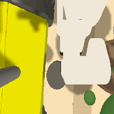
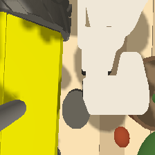
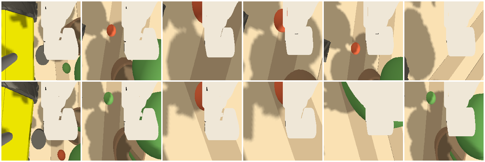
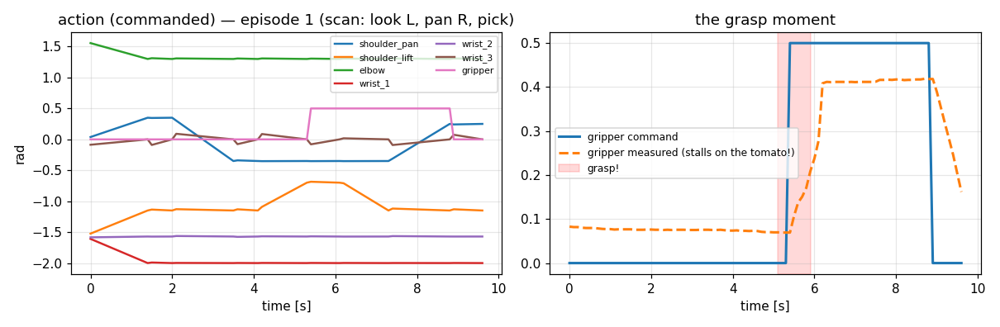

raise_ripeness_sort_refThis is the reference imitation-learning dataset for Day 2 of RAISE 2026. It captures 29 verified demonstrations of a single manipulation task — "pick the red tomato" — recorded in the shared simulation with the robot parked in front of a tomato plant row, so every frame shows real greenhouse context. It is the training set for the reference SmolVLA checkpoint recipe (the published checkpoint scored 100/100 on the Lab-2.2 evaluator, 8/8 autonomous picks).
"pick the red tomato"
One natural-language task, conditioning every frame.
Wrist camera + joint state
224×224×3 RGB image and 7 floats (6 UR5e joints + gripper), at 10 Hz.
7 commanded values
The same 6 joints + gripper — what the arm was told to do at each timestep.
Every episode is the same choreography — approach ➜ descend ➜ grasp ➜ lift ➜ place — seen through the robot's own wrist camera. Note how the arm heads to opposite sides in the two episodes below.



Tomato plants in every frame — the robot records parked facing the plant row at (−2, 3), so the wrist camera sees foliage and sandy greenhouse ground, matching the Day-3 harvesting setting.
Spawned in mid-air at the arm's two grasp points with gravity disabled — the "no-IK trick": place the target exactly where the gripper can reach, in front of the plant.
The robot's own body seen by its wrist camera — Husky side panel, wheel, and gripper fingers.
Images are only half the data — each frame also stores the robot's measured state and the commanded action. Here is the action signal for one full episode.

| Property | Value |
|---|---|
| Instruction | "pick the red tomato" (1 task) |
| Episodes | 29 — 15 red-left + 14 red-right (one take auto-discarded by the grasp check) |
| Frames | 2,030 (70 per episode = 7.0 s @ 10 Hz) |
| Robot | UR5e + Robotiq 85 gripper (simulation) |
| Camera | observation.images.wrist — 224×224×3 RGB |
| State / action | 7 × float32 — 6 UR5e joints + gripper |
| Scene | Robot parked facing the plant at (−2, 3) — plants visible in every frame |
| Quality | Every episode's grasp verified at record time; 0 NaNs |
| Split | train: episodes 0–28 (all) |
| Format | LeRobot v3.0 |
| Size on disk | ~35 MB (greenhouse visuals compress less than bare ground) |
Raw sensor volume — what the recorder actually captured:
| Stream | Per frame | × 2,030 frames | Share |
|---|---|---|---|
| Wrist camera (224×224×3 uint8) | 147.0 KB | 291.5 MB raw pixels | 99.96% |
| State (7 × float32) | 28 B | 0.06 MB | 0.02% |
| Action (7 × float32) | 28 B | 0.06 MB | 0.02% |
On disk after LeRobot's parquet compression (measured):
| File | Size |
|---|---|
data/chunk-000/file-000.parquet (all 2,030 frames) | 33.1 MB |
meta/ (episodes, stats, tasks, info) | 0.12 MB |
preview/ (human-viewable extracts, not training data) | 0.86 MB |
| Total folder | ≈ 35 MB |
That's a ≈ 9× compression of the raw pixel stream — ~1.1 MB per episode. (The first, bare-ground version compressed ≈20×; greenhouse foliage carries more visual information, so it compresses less. A nice lesson: richer context costs bytes.)
Generation rate (headless sim, hands-free): 29 kept episodes in ~18 minutes ≈ 2 episodes/minute — each episode is 7 s of recording plus ~23 s of scene setup (spawn → home → pick → verify → cleanup). Scaling up is linear: a 100-episode dataset would take ~50 minutes and ~50 MB on disk.
Every row of the parquet file is one timestep. The images are inside the parquet — LeRobot packs every camera frame into data/chunk-000/file-000.parquet alongside states and actions, so you won't see loose .pngs in data/. The preview/ folder holds extracted samples for humans.
| Feature | dtype | Shape | Meaning |
|---|---|---|---|
observation.images.wrist | image | 224 × 224 × 3 | Wrist-camera RGB frame — what the robot sees |
observation.state | float32 | 7 | Measured joint positions: shoulder pan/lift, elbow, wrists 1–3, gripper knuckle |
action | float32 | 7 | Commanded joint positions — same 7 names as the state |
timestamp | float32 | 1 | Seconds since episode start (10 Hz → 0.0, 0.1, …) |
frame_index | int64 | 1 | Frame number within the episode (0–69) |
episode_index | int64 | 1 | Which of the 29 episodes this frame belongs to |
index | int64 | 1 | Global frame number across the dataset (0–2029) |
task_index | int64 | 1 | Index into meta/tasks.parquet (always 0 — one task) |
raiseschool__raise_ripeness_sort_ref/
├── README.md ← the in-repo dataset card
├── preview/ ← extracted sample images / GIFs / plots (for humans)
├── data/chunk-000/
│ └── file-000.parquet ← THE data: 2,030 rows of (image, state, action, task)
└── meta/
├── info.json ← schema: features, shapes, fps, episode count
├── stats.json ← per-feature min/max/mean/std (used for normalization)
├── tasks.parquet ← the instruction string(s)
└── episodes/…parquet ← episode boundaries + per-episode metadata
# load it and print a frame (venv python — lerobot needs numpy 2)
~/raise_venvs/lerobot/bin/python3 - <<'PY'
from lerobot.datasets.lerobot_dataset import LeRobotDataset
ds = LeRobotDataset('raiseschool/raise_ripeness_sort_ref', root='<this folder>')
print(ds.num_episodes, 'episodes |', ds.num_frames, 'frames @', ds.fps, 'Hz')
print(ds[0]['task'], '| action:', ds[0]['action'])
PY
# watch the arm redo episode 0 (grasp_server must be running) 06_d3 --task C --team ref --episode 0 --spawn
finetune_d4 --task C --team ref --hf-user raiseschool --steps 3000 --launch tail -f ~/raise_checkpoints/smolvla_C_ref.train.log # done in ~55 min on an RTX 4090
This is the recipe behind the reference checkpoint smolvla_C_ref — 100/100 on the Lab-2.2 evaluator (8/8 picks, 0 wrong grabs, ≤452 ms/action). Note: the checkpoint published in the GitHub Release was trained on the earlier bare-ground recording; running the command above retrains on this greenhouse-context version. See RAISE2026/checkpoints/README.md for download options.
raiseschool__raise_ripeness_sort_ref/README.md — the in-folder README this page is based onRAISE2026/raise_ros2_ws/src/raise2026_labs/day2/DATASET.mdlectures/day2_l2_vla_api_imitation/RAISE2026_D2L2_Dataset_Pipeline.pdf